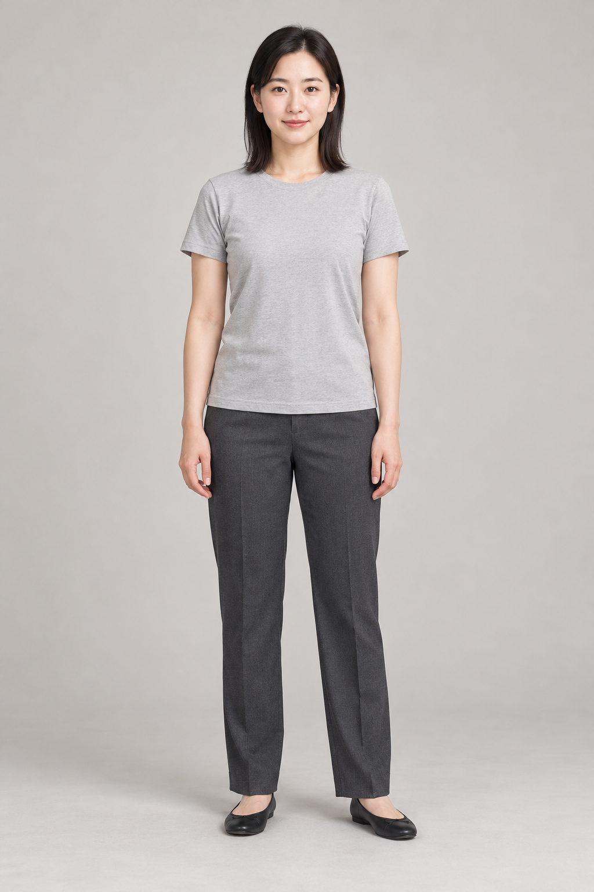
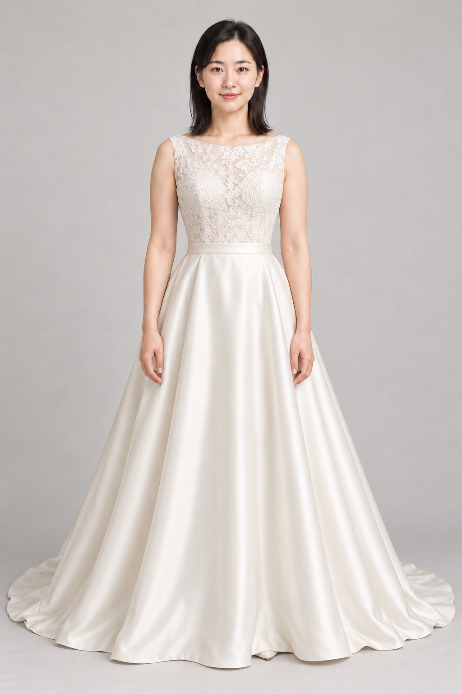

选款对比 → 个性化婚纱款式册
固定人物与拍摄条件，逐款换婚纱，关联候选款、偏好和返修。实际商品还需验证领口、蕾丝、颜色与长度是否忠实。
从两条图库分享，走向自己的创作方向
姿势决定怎么站，服装表达穿什么。
价值来自把人物、造型和场景组织成
一份可以比较、修改和复用的方案。
本次真实生成实验 · 虚构成年人物与原创概念婚纱 · 本页展示结果，不实时生图。


先说结论 对我们最直接的方向，是基于图片的造型创作。
视频与真实 3D 也有扩展，但需要新的模型、数据和工作流程。
01 / ACTUAL IMAGE EXPERIMENTS
这组图片由我们本次实际生成。
每个配置只生成一次，保留全部输入、结果与指令。
虚构成年人物 + 原创概念婚纱 + 自绘姿势图。没有使用源图库的受限原图，没有真实顾客或实物商品。样本量小，展示可行性与偏差，不代表稳定成功率。
7 次生成调用SAME PERSON / DIFFERENT DRESSES
同一人物与影棚条件，主要改变服装。
这是本次生成结果，不是 CSS 叠衣或贴图模拟。
FROM EFFECT TO PRODUCT
把已展示的能力与待验证方向分开。
生成一张好图，还需要走到可重复交付。
固定人物与拍摄条件，逐款换婚纱，关联候选款、偏好和返修。实际商品还需验证领口、蕾丝、颜色与长度是否忠实。
围绕确定的人物和服装，讨论场景氛围与动作。交付可沟通的方案，现场可执行性和成片仍需摄影流程完成。
每轮改变一个造型要素，比较搭配。下一步要验证遮挡、配饰归属和服装保持，不能把本次换婚纱直接当作整套造型已稳定。
双人需要同时保持两个人；店铺需要忠实对应真实商品。这些方向还需要客户授权、商品核对和人工验收。
参考视频驱动角色、从视频恢复动作、从图片生成网格，需要各自模型。此前仅完成有限 GLB 回读，不把本次图片演示扩写成视频或 3D 能力。
实验记录可回查 3 张 AI 输入图、1 张自绘姿势参考、4 张参考编辑结果。各配置 n=1，没有量化身份相似度、服装还原率、尺寸或合身测试；真实商品和更多人物仍待验证。
查看指令、输入关联与文件哈希 ↗01 / UNDERSTANDING
图库不是生成器，也不是三维动作。
分清它们交付什么，才能判断对自己有没有用。
理解多张参考与文字要求
生成、比较，再定向修改
图片 + 参考来源
生成指令 + 返修记录
固定同一个人、姿势、机位、背景和灯光，只换婚纱。这样比较的主要差异才是款式，而不是整个画面的变化。
先确认人物与服装，再换姿势、场景和氛围。每轮知道自己改了什么，比把所有要求一次塞进提示词更容易判断。
WHAT EACH LAYER DOES
交付静态图片。帮助表达目标，减少寻找和描述的时间。
可作为参考，不会自己执行生成。交付自己设计的姿势、构图或控制图。部分工具支持模型与动画文件。
导出哪些内容，要逐个工具确认。交付新画面或新视频。保真度、稳定性和成本需要实际评测。
生成画面不等于拿到真实三维资产。交付网格、骨架、蒙皮或运动参数，进入另一套制作流程。
还要处理适配、形变与软件兼容。FROM LINKS TO AN UNDERSTANDING
第一条转述日文姿势库；中文 GitHub 镜像主要增加翻译和检索。第二条是服装库制作预告与多参考生图演示，完整资源入口尚未确认。
原站允许符合条款的作品创作，但禁止原图再分发。镜像 MIT 不覆盖图片；原站还有真人与未成年人用途限制。真人婚纱方案应另用自有或适当授权的参考。
角色跟随视频、视频恢复人体动作、图片生成网格和自动绑定，分别需要不同模型。它们不是“下载姿势图”自然就能得到的结果。
对我们的价值假设是：减少找图与反复描述，让选款沟通更具体，成功方案可继续修改。是否值得做产品，要用真实需求、保真效果和返修成本验证。
02 / CAPABILITY MAP
12 项素材、编辑与生成方向。
展开查看输入、输出、机位、许可与验证程度。
“文档已读”表示核对了官方说明或代码，不代表已本机复现。历史有限实验单独列出，不扩大为完整兼容性承诺。查看有限导出实验记录 ↗
03 / CREATIVE DIRECTIONS
每个方向都写清输入、固定项、变化项与交付。
这里的价值是待验证的产品假设，不能当效果承诺。
参考、指令、结果和返修关联保存。
同条件对比，记录喜欢与不喜欢。
关联真实商品，人工确认商品细节。
现成图像工具已经能尝试多参考换装。新产品需要证明：比直接在通用工具里生图，选款更快、商品更准、方案更好复用。只是把图库与提示词放到一起，投入价值有限。
本项目已完成独立生图小样本与研究方案整理，尚未接入实时生成、商品系统或客户照片服务。
04 / SOURCES & PRESERVATION
原图在私有备份；研究页保留索引与关联。
代码、素材和模型的许可分别核对。
姿势站允许免费创作参考和符合条款的商业作品，禁止原图及加工后图片数据的再分发、转载、转售；另有限制真人与未成年人用途的条款。中文镜像的 MIT 只覆盖代码。服装库完整下载与商用许可尚未确认。私有备份仅用于本人回查，不作为公开素材镜像。
PRIMARY SOURCES
PINNED DOCUMENTATION